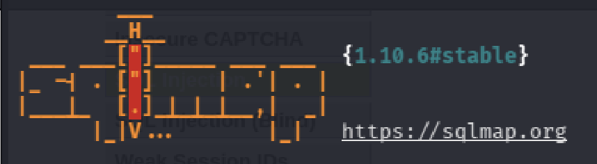
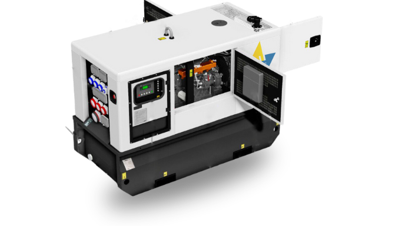
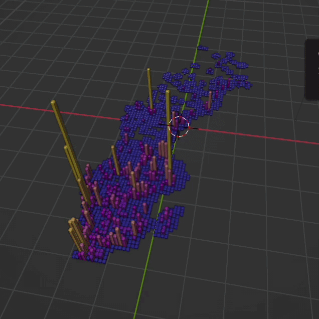
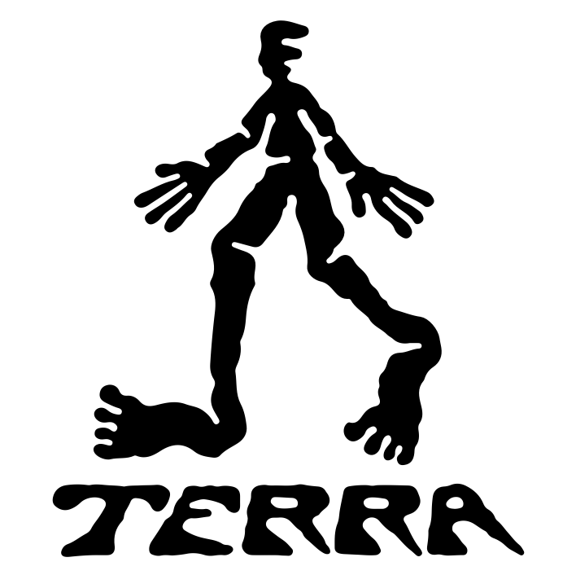
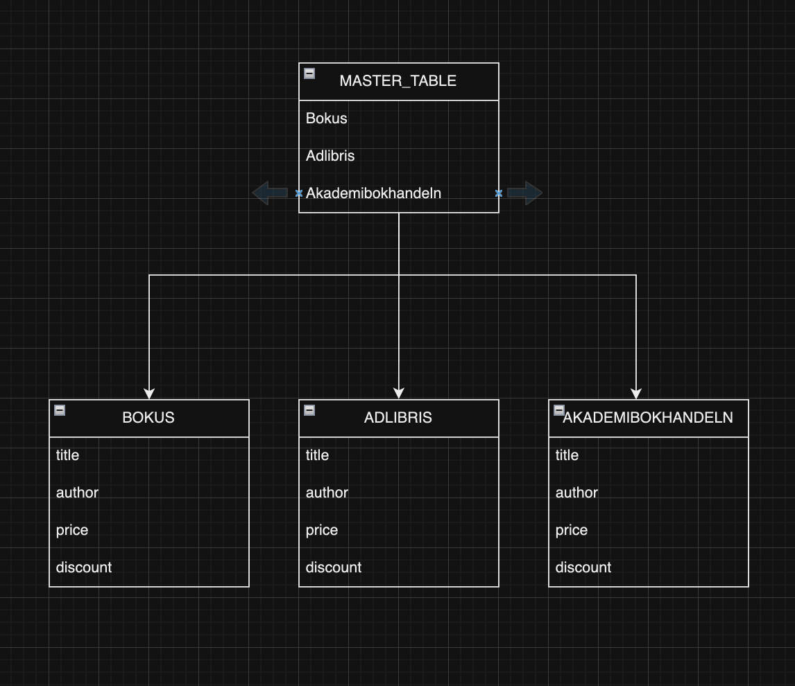

Additional Details
This project demonstrates a comprehensive SQL injection vulnerability assessment against a DVWA (Damn Vulnerable Web Application) target using SQLMap. The assessment includes database enumeration, table extraction, credential dumping, and privilege analysis to identify critical security weaknesses in web applications.
- Technologies used: Kali-Linux, Shell, JavaScript, SQL
- Team size: 1 developer
- Duration: 1 day
SEE MORE
|

Additional Details
This project involved creating a comprehensive customization tool for electrical generators. The software allows users to configure various parameters and visualize the results in real-time.
- Technologies used: JavaScript, HTML, CSS, Wordpress, SQL
- Team size: 1 developer
- Duration: 8 months
SEE MORE
|

Additional Details
Interactive 3D visualization tool for geographical data analysis. Currently in development with planned features for real-time data updates.
- Technologies used: Blender, Python, Three.js, D3.js
- Status: Beta testing
SEE MORE
|

Additional Details
User interface design for the TERRA GPS system. Due to confidentiality, specific details cannot be disclosed.
SEE MORE
|
Additional Details
An interactive LLM-based virtual pet that learns and adapts to user interactions. Currently being developed with a focus on natural language processing.
- Technologies used: Python, PyTorch
- Features: Emotion simulation
SEE MORE
|

Additional Details
Automated data scraping tool for market pricing analysis. Successfully deployed and used by the analytics team.
- Technologies used: Python, BeautifulSoup, Selenium
- Outcome: 40% reduction in data collection time
SEE MORE
|